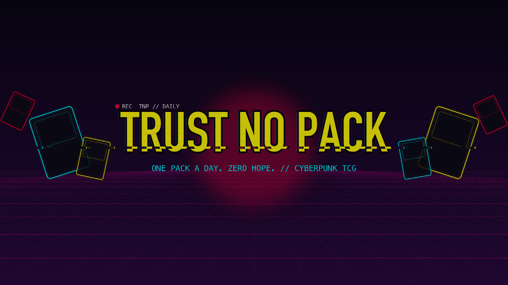
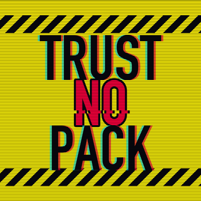

Trust No Pack is a short-video channel: a 38-year-old dad opens one Cyberpunk TCG (Welcome to Night City) booster a day and reviews every pull with zero expectations and plenty of sarcasm. New Shorts every day. Rate each pack from gonk to nova in the comments.
"Trust No Pack" is also the name of a small private tool the channel owner runs on their own computer. It uses the YouTube Data API to upload and schedule videos to the Trust No Pack YouTube channel. It isn't offered to anyone else, and it only accesses the channel owner's own YouTube account.